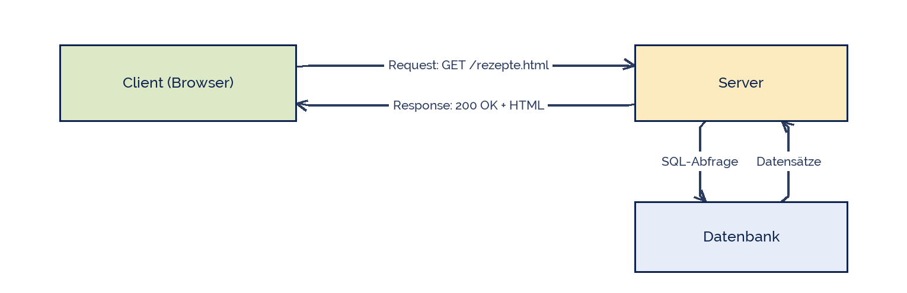

Kapa65
Kapa65
Good morning!
Nur das Schöne wird die Welt retten!
Fjodor Dostojewski
Nicht verzagen, Doc Alvers fragen!
Informatik — FOS 12
HTTP und dynamische Seiten
Wer fragt, wer antwortet — und wo die Arbeit tatsächlich passiert
Nicht verzagen, Doc Alvers fragen!
Kapitel 01
Frage und Antwort
Das Web ist ein Gespräch mit festen Regeln
Nicht verzagen, Doc Alvers fragen!
Der Ablauf jedes Seitenaufrufs

Der Client fragt, der Server antwortet — nie umgekehrt
HTTP ist das Protokoll: die Regeln, wie Frage und Antwort aussehen müssen
Der Server holt sich, was er braucht, aus der Datenbank — für den Client unsichtbar
Nicht verzagen, Doc Alvers fragen!
Die Begriffe dazu
| Begriff | bedeutet |
|---|---|
| Client | das Programm, das fragt — hier: der Browser |
| Server | das Programm, das antwortet — läuft rund um die Uhr |
| HTTP | Hypertext Transfer Protocol: die vereinbarten Regeln |
| HTTPS | dasselbe, aber verschlüsselt — heute Pflicht |
| URL | die Adresse: Protokoll, Servername, Pfad, ggf. Parameter |
| zustandslos | der Server erinnert sich nicht an die letzte Anfrage |
Zustandslos ist der wichtigste und überraschendste Punkt: jede Anfrage steht für sich
Damit ein Warenkorb trotzdem funktioniert, braucht es Sitzungen (Sessions) und Cookies
Nicht verzagen, Doc Alvers fragen!
Kapitel 02
HTTP im Klartext
Das Protokoll ist lesbarer Text
Nicht verzagen, Doc Alvers fragen!
Eine echte Anfrage und die Antwort
GET /rezepte.html HTTP/1.1 Host: projekt.fos12.de User-Agent: Mozilla/5.0 ... Accept: text/html ---------------------------------------------------- HTTP/1.1 200 OK Content-Type: text/html; charset=UTF-8 Content-Length: 1842 <!DOCTYPE html> <html lang="de"> ...
Nicht verzagen, Doc Alvers fragen!
Methoden und Statuscodes
| Methode | wofür | Statuscode | bedeutet |
|---|---|---|---|
| GET | etwas abholen, Parameter in der URL | 200 | OK — alles gut |
| POST | etwas senden, Daten im Rumpf | 301 / 302 | umgeleitet |
| PUT | etwas ersetzen | 404 | nicht gefunden |
| DELETE | etwas löschen | 403 | verboten |
| 500 | Serverfehler — der Code ist schuld |
Merkregel: GET holt, POST schickt. Passwörter niemals per GET — sie stünden in der URL
Die erste Ziffer verrät alles: 2xx gut, 3xx woanders, 4xx Client-Fehler, 5xx Server-Fehler
Nicht verzagen, Doc Alvers fragen!
Kapitel 03
Wo läuft was?
Client- und serverseitige Technologien
Nicht verzagen, Doc Alvers fragen!
Die beiden Seiten im Vergleich
| clientseitig | serverseitig | |
|---|---|---|
| läuft auf | dem Gerät des Nutzers | dem Server im Rechenzentrum |
| Sprache | JavaScript | PHP, Python, Java, Node.js |
| sieht der Nutzer | den ganzen Quelltext | nur das Ergebnis |
| kann | Seite sofort verändern, ohne Neuladen | Datenbank lesen, Dateien speichern |
| kann nicht | Geheimnisse hüten, Daten sicher prüfen | auf Mausbewegungen reagieren |
| Beispiel | Eingabe rot färben, Menü aufklappen | Rezept aus der Datenbank holen |
Sicherheitsregel: Jede Prüfung im Browser ist nur Komfort — die echte Prüfung passiert auf dem Server
Alles, was der Client sieht, kann der Client auch ändern
Nicht verzagen, Doc Alvers fragen!
Clientseitig: JavaScript reagiert sofort
// laeuft im Browser, ohne den Server zu fragen
const feld = document.getElementById('kalorien');
const hinweis = document.getElementById('hinweis');
feld.addEventListener('input', function () {
const wert = parseInt(feld.value);
if (wert > 2500) {
hinweis.textContent = 'Das ist viel fuer einen Tag.';
} else {
hinweis.textContent = '';
}
});Nicht verzagen, Doc Alvers fragen!
Serverseitig: PHP baut die Seite
<?php
// laeuft auf dem Server - der Browser sieht nur das Ergebnis
$db = new PDO('sqlite:tagebuch.db');
$stmt = $db->prepare('SELECT name, kcal FROM lebensmittel WHERE kcal > ?');
$stmt->execute([200]);
foreach ($stmt->fetchAll() as $zeile) {
echo '<li>' . htmlspecialchars($zeile['name']) . '</li>';
}
?>Nicht verzagen, Doc Alvers fragen!
Was daran wichtig ist
Der Browser bekommt fertiges HTML — von PHP sieht er keine Zeile
prepare mit Platzhalter statt zusammengesetztem SQL: das ist der Schutz gegen SQL-Injection
htmlspecialchars entschärft Nutzertext, bevor er in die Seite geschrieben wird
Beides kommt in Woche 30 (Datensicherheit) noch einmal ausführlich
Für unser Projekt reicht eine serverseitige Technik — wir bleiben bei einer Sprache
Nicht verzagen, Doc Alvers fragen!
Kapitel 04
Selbst nachsehen
Die Entwicklertools sind das beste Lehrmittel
Nicht verzagen, Doc Alvers fragen!
Was ihr mit F12 seht
| Reiter | zeigt | typische Frage, die es beantwortet |
|---|---|---|
| Elemente | den fertigen DOM-Baum | Warum ist der Abstand so groß? |
| Konsole | JavaScript-Fehler und -Ausgaben | Warum passiert nichts beim Klick? |
| Netzwerk | jede einzelne Anfrage mit Status und Größe | Warum lädt die Seite so langsam? |
| Anwendung | Cookies und lokalen Speicher | Was speichert die Seite über mich? |
| Geräteansicht | die Seite in Handygröße | Bricht mein Layout um? |
Öffnen mit F12 — im Netzwerk-Reiter die Seite mit Strg+Shift+R neu laden
Klickt eine Anfrage an: Methode, Statuscode, Header und Antwort stehen alle da
Nicht verzagen, Doc Alvers fragen!
Fun Facts: HTTP
HTTP/0.9 von 1991 kannte genau einen Befehl: GET. Statuscodes gab es nicht
Der Statuscode 418 I'm a teapot stammt aus einem Aprilscherz von 1998 — und lebt bis heute weiter
404 ist so berühmt, dass Firmen eigene Fehlerseiten gestalten — manche mit Spielen darin
HTTP/2 und HTTP/3 sind nicht mehr lesbarer Text, sondern binär — dafür deutlich schneller
Das Wort Cookie kommt von „magic cookie“, einem alten Fachbegriff für ein weitergereichtes Datenpäckchen
Nicht verzagen, Doc Alvers fragen!
Eure Aufgabe: den Verkehr beobachten
Öffnet eure Projektseite und den Netzwerk-Reiter; notiert für drei Anfragen Methode, Status und Größe
Findet eine Seite im Netz, die einen 404 liefert, und haltet die Antwort fest
Ordnet in eurer Projektidee jede geplante Funktion ein: clientseitig oder serverseitig?
Begründet für eine davon, warum sie nicht im Browser geprüft werden darf
Ergebnis kommt als Tabelle ins Projekttagebuch — nächste Woche planen wir die Datenbank
Nicht verzagen, Doc Alvers fragen!